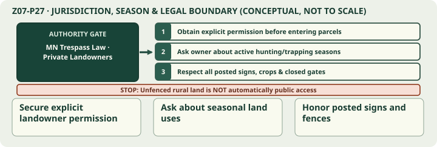

Z07-P27 · Traps and snares · New manuscript
Private-Land Permission, Trespass and Neighbor Communication
Prevent land-access conflicts and accidental encounters through clear landowner permission and neighbor safety communication.
When it applies · Rural property stewardship, private trail access, and shared rural boundaries.
Equipment · Written landowner permission, parcel boundary map.

Actions
- Obtain clear prior permission from private landowners before hiking, skiing, or walking pets across rural fields, woods, or creek corridors.[L01, H02]
- Ask landowners directly whether hunting, livestock protection, or lawful seasonal trapping is active on the parcel before bringing children or dogs onto the land.[L01, L10]
- Honor all posted boundaries, agricultural-land trespass laws, and closed gates without cutting across private corners to reach public lakes or forests.[L01, H02]
Failure recognition · Assuming an unfenced rural woodlot is open public land causes trespass violations and unexpected encounters with active seasonal land uses.[L01, H02, L10]
Verify · Landowner permission and seasonal activity checks are confirmed prior to private-parcel entry.[L01, H02]
Stop or change course · Stop immediately at unverified fences, private driveways, or posted signs until explicit permission is obtained.[L01, H02]
Evidence and editorial notes
- H02 · Minnesota DNR · Minnesota Hunting and Trapping Regulations (Current web edition)
- Section: Hunting licenses, zones, seasons, and legal methods · Conditions: Minnesota big game, small game, and bird hunting
Support: Hunters must verify current license, permit-area, season, legal-hours, blaze-clothing, and method rules with the governing authority prior to afield activity.
Limitations: Private-land trespass law, municipal ordinances, and tribal jurisdiction apply separately; emergencies do not suspend wildlife law. · Conflicting evidence: None noted.
Editorial note: Establishes Z06 hunting authority gate. · Specialist reviewer: Minnesota DNR wildlife law reviewer
Primary source · checked 2026-11-25
Current assessment · A04-H02 (2026-11-25) · Bounded support confirmed (A04): DNR publishes the applicable checks and updates. No season date, license decision or exception is approved by this record. Limits: Specialist review PENDING (Minnesota DNR wildlife law reviewer); publication HOLD. All release decisions pending. - L01 · Minnesota DNR · Minnesota Trapping Regulations and Fur Harvest Rules (Current web edition)
- Section: Minnesota trapping licensing, seasons, and statutory limits · Conditions: Any regulated trapping activity or legal reference in Minnesota
Support: Trapping is strictly regulated by license, season, species, trap type, set location, check intervals, and landowner permission; unauthorized trapping is illegal.
Limitations: Emergency narratives never create an exemption to set traps or snares; verify current statute and DNR handbook every season. · Conflicting evidence: None noted.
Editorial note: Primary Z07 legal boundary. · Specialist reviewer: Wildlife law and DNR enforcement reviewer
Primary source · checked 2026-11-25 - L10 · Minnesota DNR · Minnesota Trapping Regulations and Fur Harvest Rules (Current web edition)
- Section: Human and pet hazard recognition around lawful trapping areas · Conditions: Walking dogs or hiking in open public-use lands during furbearer seasons
Support: Keep dogs on short leashes on open multi-use lands during autumn/winter trapping seasons, avoid bait piles and shoreline culverts, and carry vet contact info.
Limitations: Body-gripping and cable devices present rapid fatal risk to unleashed pets; prevention via leashing is far safer than emergency release. · Conflicting evidence: None noted.
Editorial note: Core Z07 bystander & pet hazard prevention. · Specialist reviewer: Veterinary and outdoor-safety reviewer
Primary source · checked 2026-11-25
Source lineage · New manuscript (Z07 P18 legal and safety) · Classification · New manuscript.